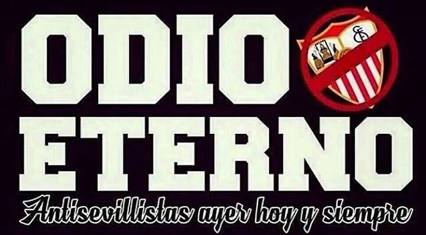

Los "cánticos en contra del Sevilla" son expresiones vocales o canciones utilizadas por aficionados de equipos de fútbol rivales para provocar, ridiculizar o desmoralizar a los seguidores y jugadores del Sevilla Fútbol Club durante partidos o eventos deportivos. Estos cánticos suelen ser parte de la cultura futbolística y se utilizan como una forma de apoyar a su propio equipo y de desestabilizar al oponente.
La historia detrás de los cánticos en contra del Sevilla, como en el caso de muchos otros equipos de fútbol, puede tener raíces en rivalidades históricas entre equipos, confrontaciones en el terreno de juego, momentos controvertidos o simplemente en rivalidades regionales o políticas.
El Sevilla Fútbol Club es uno de los equipos más importantes y exitosos de España, con una larga trayectoria en el fútbol nacional e internacional. Esto significa que ha participado en numerosas competiciones a lo largo de los años, enfrentándose a una variedad de equipos y acumulando rivalidades en el proceso.

Las rivalidades en el fútbol pueden ser tanto locales como nacionales. Equipos cercanos geográficamente tienden a desarrollar rivalidades intensas debido a la competencia por el dominio en la región, la historia de enfrentamientos en el campo y la rivalidad entre las ciudades o regiones que representan. En el caso del Sevilla, su rivalidad más conocida es con el Real Betis Balompié, otro club de fútbol de la ciudad de Sevilla. Los enfrentamientos entre Sevilla FC y Real Betis son conocidos como el "Derbi sevillano" y son considerados uno de los derbis más apasionantes y emocionantes del fútbol español.
Los cánticos en contra del Sevilla pueden surgir durante estos enfrentamientos locales, así como durante partidos contra otros equipos con los que el Sevilla tiene rivalidades históricas o competiciones significativas.
Es importante tener en cuenta que, aunque los cánticos en contra del Sevilla pueden ser parte del ambiente emocionante y a veces polémico del fútbol, también pueden cruzar límites y promover comportamientos discriminatorios o violentos. Por lo tanto, es fundamental promover un ambiente deportivo respetuoso y pacífico tanto dentro como fuera del campo de juego.